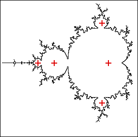

| For a point c in an n-cycle component, the iterates of z0 = 0
converge to an n-cycle.
In each n-cycle component,
there is exactly one c value for which z0 = 0 belongs to an n-cycle. |
| That is, taking z0 = 0, we have zn = 0.
This c is called the center of the n-cycle component. |
| For example, the center of the big cardioid (1-cycle component) is c = 0.
Observe |
| z0 = 0, |
| z1 = z02 + c = 02 + 0 = 0, |
| and so all zn = 0. |
|
|  |
| For another example, the center of the 2-cycle component is c = -1. Observe |
| z0 = 0, |
| z1 = z02 + c = 02 - 1 = -1, |
| z2 = z12 + c = (-1)2 - 1 = 0, |
| so z3 = -1, |
| z4 = 0, |
| and so on. |
|
| A few centers (indicated by red crosses) are pictured above. |